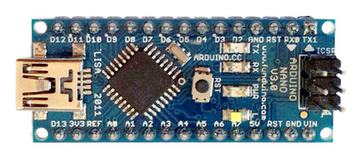

Just what are we making?
This project will walk through the process of building an Arduino based temperature and humidity sensor that essentially emulates the unit that's included in the standard Ninja Blocks kit.
For hardware, we'll be using an inexpensive DHT series temperature and humidity sensor, an RF transmitter module, and of course, an Arduino.
For the software part, we'll need two Arduino libraries, and a simple sketch to read from the sensor and send the readings to the Ninja Block.
The sensor unit
You should be able to use any of the DHT series sensors. For this walkthrough, I'll be using a DHT11 temperature and humidity sensor module.
They're very inexpensive but only have 1 degree celcius precision. This one was about $3 from DX (http://www.dx.com/p/121350). The DHT22 is a little more expensive but it gives you double the precision as well as being able to handle a much wider range for both temperature and humidity.
The RF transmitter
You'll need a 433 MHz RF transmitter that uses OOK (On/Off Keying) modulation.
Again, they cost very little. This one was about $2 from DX (http://www.dx.com/p/149254).
To get the best range out of the transmitter, you'll also need to add an antenna, but provided it's reasonably close to the Ninja Block, you can do without it while you're prototyping. The antenna should be about 17 cm long. If you're wondering where that figure comes from, the formula is reasonably simple. The exact frequency of these transmitters is 433.92 MHz (433920000 cycles per second) so at (close to) the speed of light (299792458 metres per second) each cycle is:
1 / 433920000 * 299792458 = 0.69 metres or 69 cm
We typically use one quarter of the wavelength which works out to just over 17 cm.
The Arduino

The following two Arduino libraries are required and must be available in the Arduino sketchbook libraries directory.
- DHT from https://github.com/markruys/arduino-DHT
- WT450Sender from https://github.com/GraemeWieden/WT450Sender